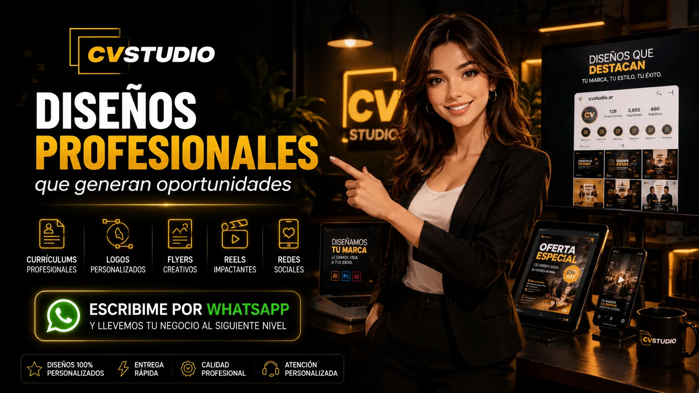

01
Currículum Profesional
Diseño moderno, ordenado y adaptado al perfil y al puesto que buscás.
Consultar servicio →Creamos currículums profesionales, cartas de presentación, identidades visuales y contenido para redes sociales con diseños modernos, personalizados y listos para usar.

Cada trabajo se desarrolla según tus objetivos, tu estilo y el público al que necesitás llegar.
Diseño moderno, ordenado y adaptado al perfil y al puesto que buscás.
Consultar servicio →Renovación completa de contenido, estructura y diseño para mejorar un currículum anterior.
Consultar servicio →Una introducción profesional para acompañar tus postulaciones y destacar tu perfil.
Consultar servicio →Página online con información profesional, descarga en PDF, enlaces de contacto y código QR.
Consultar servicio →Diseños de marca modernos para negocios, emprendimientos y proyectos personales.
Consultar servicio →Flyers, banners, reels, historias, portadas y contenido pensado para comunicar y vender.
Consultar servicio →El mismo perfil atraviesa seis etapas reales: análisis, organización, diseño, redacción profesional, terminación CVStudio y resultado final.
☎ +54 9 11 00000000
✉ juanperez@email.com
● Argentina
Experiencia en tareas administrativas, atención al cliente, organización documental y manejo de herramientas digitales.
Administrativo con experiencia en gestión documental, atención al cliente y organización de procesos administrativos. Acostumbrado a trabajar con múltiples tareas en simultáneo, manteniendo un alto nivel de organización, precisión y orientación al servicio. Manejo de herramientas informáticas y capacidad para colaborar en equipos de trabajo, contribuyendo al correcto funcionamiento de las operaciones diarias.
Gestión de documentación, carga de datos, atención a clientes y coordinación de tareas internas.
Recepción de consultas, seguimiento de solicitudes y organización de información.
Me encuentro con disponibilidad para incorporarme a nuevos desafíos profesionales, aportando compromiso, organización y una actitud proactiva para contribuir al cumplimiento de los objetivos de la empresa. Quedo a disposición para ampliar cualquier información en una entrevista personal. Muchas gracias por su tiempo y consideración.
Saludos cordiales.Estos espacios están preparados para incorporar tus trabajos reales en el próximo paso.

Estructura clara, perfil profesional y presentación preparada para nuevas oportunidades laborales.
 Publicidad digital
Publicidad digital
 Redes sociales
Redes sociales
Te acompañamos desde la primera consulta hasta la entrega de todos tus archivos.
Nos contás qué servicio necesitás, cuál es tu objetivo y qué estilo estás buscando.
Recibimos tus datos, textos, fotografías, referencias o archivos anteriores.
Creamos una propuesta profesional, revisamos los detalles y aplicamos las modificaciones acordadas.
Entregamos todo organizado, en alta calidad y preparado para enviar, imprimir o publicar.
No usamos una solución idéntica para todos. Cada trabajo se adapta a la información, identidad y necesidad del cliente.
Comenzar mi proyectoCada propuesta se crea según tu perfil, negocio o marca.
Atención por WhatsApp durante el desarrollo del trabajo.
Entrega en formatos adecuados para enviar, imprimir o publicar.
Diseños claros, modernos y preparados para generar una buena primera impresión.
Testimonios reales de clientes satisfechos que confiaron en CVStudio. Calidad, compromiso y atención personalizada en cada proyecto.


Tocá cada pregunta para ver la respuesta correspondiente.
El tiempo depende del servicio y de la cantidad de información. En trabajos de CV, la entrega estimada suele ser de 4 a 8 horas una vez recibidos todos los datos.
Según el servicio, se entregan archivos PDF, JPG, PNG y formatos adecuados para redes sociales o páginas web.
Sí. Antes de la entrega final se revisan los detalles y se aplican las correcciones acordadas.
Podés enviar tus datos, fotografías, textos y archivos anteriores directamente por WhatsApp.
Los medios y condiciones de pago se informan antes de comenzar, según el servicio solicitado.
Elegí el medio de contacto que te resulte más cómodo. Te responderemos con la información correspondiente.